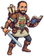
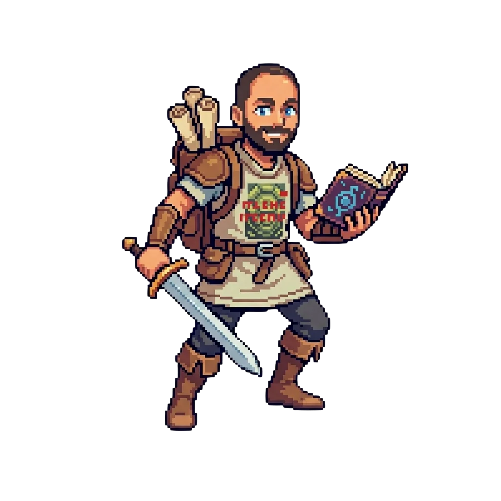

Solo Adventurer
Owns projects end-to-end, design doc to deployment, as the sole designer-developer.

Giannis Dimitriadis
— A Portfolio Adventure —
CLASS Game Designer & Developer ✦ GUILD CERTH / ITI / BHV Group
· Chapter I ·
Six years taking interactive experiences from concept to deployment, as the sole designer-developer on serious games, conversational-AI exhibits and museum installations.
Decision-moment systems · progression · balancing · design docs
Gameplay architecture · state machines · interfaces · packaging
MetaHuman · Anim Blueprints · lip-sync pipelines · MetaTailor
Convai · LLM dialogue · STT/TTS (ElevenLabs) · gesture & face tracking
VR titles · WebGL builds · performance profiling
YOLO pose estimation · MediaPipe · OpenCV
Git + LFS · Azure DevOps · cross-platform builds
PHP · JavaScript · MySQL · third-party APIs
Owns projects end-to-end, design doc to deployment, as the sole designer-developer.
Turns expert content from scientists, academics and curators into playable systems.
Ships across VR, WebGL, PC and multi-display touch kiosks without breaking stride.
Full-stack past life grants a pragmatic, ship-it approach to problem-solving.
· Chapter II ·
Selected projects, logged as quests. Main and Epic quests are in active development. Completed quests are deployed in the wild, some in actual museums.
Educational Serious Game · Sole Designer & Developer
A first-person time-travel game teaching Greek students (14–16) the evolutionary origins of diet-related conditions through the Mismatch Hypothesis. Four historical eras plus a framing lab, guided by nine MetaHuman NPCs with Greek voice-over, fitted to a single class period.
Allies: Lab of Biological Anthropology & Inst. of Bioarchaeological Research, Democritus University of Thrace
Conversational-AI Museum Exhibit · Technical Lead & Sole Technical Contributor
A talk-to-it Apollo-era astronaut for the JOIST Space exhibition. Voice or preset questions, Greek or English, on a dual-display touch kiosk. Built on a reusable UE 5.6 template where a new museum character needs new data, not new engineering. Expected reach: ~5,000 students.
Allies: JOIST (exhibition partner)
Concept Originator · Python / MediaPipe Developer
Originated the concept of a talk-to-it 3D Socrates, developed in the context of the ArtCast4D European project. Built the real-time face-tracking module (Python + MediaPipe) that turns the avatar's head toward the visitor, making the exchange feel present and believable. The initial version was hosted in the exhibition "Artificial Intelligence - Possibilities and Challenges" at Noesis, Thessaloniki Science Center & Technology Museum, and after its huge success with children Noesis made it a permanent exhibit in its main room. The avatar was also presented in the Athens pilot of the ArtCast4D project, and the exhibition is now hosted at the JOIST Innovation Park.
Allies: MeVer Group / ITI / CERTH
Artifacts: 🎬 Watch an interaction with the avatar
VR Educational Game · Designer & Developer
A VR serious game deployed on-site at the museum, built around immersive storytelling and scenario-based learning. Profiled to hold stable frame rates on Oculus Rift S and Quest 2.
Allies: Archaeological Museum of Thessaloniki, Ephorate of Antiquities of Thessaloniki City, International Hellenic University & Arx.Net
Artifacts: 🎬 Watch the VR game in action
WebGL Point-and-Click Adventure · Designer & Developer
A browser-based 2D point-and-click narrative adventure taken from concept to launch. Playable on mobile and desktop, presenting the museum's subject matter through interactive narrative challenges.
Allies: Museum of the Macedonian Struggle
Artifacts: 🌐 Project website with the playable WebGL game
Interactive Installation · Designer & Developer
A real-time installation where participants vote by raising their hands while a giant eye is watching them. Developed in the context of the ArtCast4D European project and presented in the Athens pilot of the project. Built with a custom Python YOLO pose-estimation pipeline that handles the gesture recognition and sends the data to AAASeed to render the voting results and the eye movement.
Allies: MeVer Group / ITI / CERTH
· Chapter III ·
An adventurer's log. Guilds joined, trades mastered, training grounds survived.
Brain, Health & Virtual Reality Group — CERTH/ITI, Thessaloniki
Sole designer and developer on educational serious games and interactive installations, owning game & scenario design, implementation, character pipelines and deployment. Collaborates with scientific, academic and cultural partners. Works with responsibility for architecture and delivery across UE5, Unity and Python.
Bet Data Services, Thessaloniki
Built and maintained features for a live betting platform (PHP, JavaScript, HTML/CSS). Led functional upgrades to the casino module, integrated third-party APIs, and shipped on tight deadlines in a small agile team.
University of Macedonia, School of Information Sciences
Where the character build began. Foundations in programming, systems and object-oriented design.
· Chapter IV ·
Achievements unlocked along the way.
“Improving the feeling of presence and immersion through convincing embodiment in VR” — EuroVR 2020 Proceedings, pp. 61–64 (Anastasovitis, Dimitriadis, Nikolopoulos, Kompatsiaris).
LegendarySummer School on Artificial Intelligence and Games — 2021 & 2022, 40 hours each.
Rare3D Serious Games for Culture and Education with Virtual Reality — 2019.
RareGreek — native fluency. English — full professional proficiency.
Passive Skill· Final Chapter ·
“Every good party needs a designer-developer. If you have a quest — a game, an exhibit, an experience — send a raven.”
📍 Thessaloniki, Greece